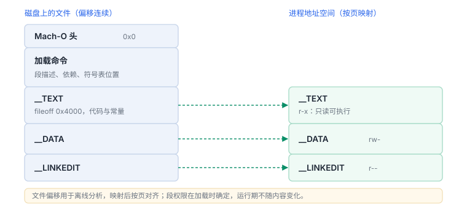

Mach-O 与虚拟地址空间
文件里是布局描述，内存里是按页映射的结果
Mach-O 既是磁盘上的文件格式，也是加载器据以建立内存映射的说明书。读它时要同时看两个世界：文件里连续的字节，与进程里按页对齐、权限各异的映射。
场景 同一个文件，用 file 看是一行，用 otool 看是几百行。段、节、加载命令、签名，全压在这一个文件的不同偏移上。
1. 三层结构
| 区 | 内容 | 加载后 |
|---|---|---|
| 头部 | 魔数、CPU 类型、文件类型、命令数量 | 加载器读取，不映射为可执行代码 |
| 加载命令 | 段描述、依赖、符号表位置、签名位置、入口 | 加载器按命令建立映射与绑定 |
| 段数据 | 代码、常量、可写数据、链接信息 | 按段权限映射为只读/可执行/可读写 |
三段关系是“目录 → 条目 → 内容”：头部告诉你条目有多长，命令告诉你内容在哪、以什么权限映射，段数据本身不解释自己。
2. 段与节：权限由段决定
__TEXT：代码与只读常量，通常映射为可读可执行、不可写。__DATA：已初始化的可写数据；__DATA_CONST一类段在绑定完成后转为只读，减少可写面。__LINKEDIT：符号表、重定位信息、签名等链接元数据，供加载器与工具使用。
段名是粗粒度权限单位，节（section）是段内的细分。权限由段决定：同一段内的节共享映射属性，这也是“把敏感常量放错段导致可写”的根源。

3. 三个坐标系
| 坐标 | 由谁定义 | 什么时候有效 |
|---|---|---|
| 文件偏移 | 文件布局 | 离线分析时 |
| 虚拟地址（vmaddr） | Mach-O 首选布局 | 符号、反汇编显示 |
| 运行时地址 | 本次映射的实际基址 | 调试、崩溃报告、采样 |
三者的换算关系在 K07 详述。这里先记住一条：任何地址在说出“哪个进程、哪次运行、哪个映像”之前都没有意义。
/usr/bin/ssh: Mach-O universal binary with 2 architectures:
[x86_64:Mach-O 64-bit executable x86_64] [arm64e:Mach-O 64-bit executable arm64e]
Architectures in the fat file: /usr/bin/ssh are: x86_64 arm64e读法：外层是 fat 头，内部每个切片都是完整 Mach-O（各自的头、命令、段与签名）。因此符号与 UUID 必须按切片匹配，不能拿一个切片的符号去符号化另一个。
/bin/ls (architecture x86_64): minos 10.14 sdk 15.7 tool LD 1167.3
/bin/ls (architecture arm64e): minos 11.0 sdk 15.7 tool LD 1167.3读法：两个切片的 sdk 相同，但 minos 不同（10.14 与 11.0）。这说明“最低支持版本”是按切片记录的，不是按文件；判断兼容性时必须先确定实际加载的是哪个切片。
4. 为什么按页映射
内存保护以页为单位，文件映射也按页对齐。这带来两个可见后果：段在文件中的偏移与大小受对齐约束，段之间可能出现填充；一个段的最小内存开销是一页，即使逻辑上只有几十字节。分析体积与内存占用时要考虑对齐，而不是简单相加。
5. 可验证实验
otool -hv /path/to/YourApp.app/YourApp
otool -l /path/to/YourApp.app/YourApp | grep -E "segname|initprot|maxprot" | head -20
size -m /path/to/YourApp.app/YourApp- 列出各段的初始权限与最大权限，找出哪些段可写。
- 把一处常量从可写段移到只读段，比较产物体积与运行行为。
- 解释：为什么
__TEXT段的大小通常不是页大小的整数倍，但映射后占用是页的整数倍？
6. 安全含义
- 段权限是运行时的第一道约束：代码段不可写，显著提高“改写指令”类攻击的成本。
- 可写且可执行的映射是被刻意避免的状态；需要生成代码的场景必须走平台提供的机制。
- 签名覆盖段内容，改动段数据会导致校验失败，这也是“补丁式修改”难以持久的原因。
7. 段权限与攻击面
| 段 | 权限 | 被改写的后果 |
|---|---|---|
| __TEXT | r-x | 破坏签名，需要 mprotect |
| __DATA_CONST | 启动后可读写，之后只读 | 绑定完成后改写会失败 |
| __DATA | rw- | 可改数据，痕迹最少 |
改数据的成本最低，改代码页最高；防护设计应优先盯住“可写且可执行”的异常组合。
8. 数据细节：一个真实段的地址与大小
| 字段 | 实测值 | 说明 |
|---|---|---|
vmaddr | 0x100000000 | 首选地址，不是运行时地址 |
vmsize | 0x8000（32 KB） | 两页，按 16 KB 对齐 |
filesize | 32768 | 与 vmsize 相同，说明无零填充 |
initprot | 0x5 | 读 + 执行 |
nsects | 5 | 段内还有五个节 |
这些字段直接决定“能不能改”：读+执行的段改一个字节都要先改页权限，而只读数据段连权限都改不了。
9. 一次真实排查记录：写只读页崩溃
- 现象：运行到某处必崩，异常是写入时权限失败。
- 先看异常码：
KERN_PROTECTION_FAILURE表示地址有效但权限不足。 - 定位段：用崩溃地址反查所属段，通常是
__TEXT或已转只读的__DATA_CONST。 - 找原因：把常量或不可变数据放在了会被写入的路径上。
- 结论与限制：记录“写入只读段”，并注明结论只对该构建的段布局成立。
text data bss dec hex filename
18211 1400 528 20139 4eab i386:x86-64 (ex /bin/ls)
18356 1368 520 20244 4f14 aarch64 (ex /bin/ls)读法：text/data/bss 是按属性归并后的三类，不等于段名；两个切片分别统计，dec 是合计。text 明显大于文件里 __text 节时，说明把只读常量也算进去了。
Fat header in: /usr/bin/ssh
fat_magic 0xcafebabe
nfat_arch 2
architecture x86_64
offset 16384
size 767056
align 2^14 (16384)读法：0xcafebabe 是 32 位 fat 魔数（64 位头是 0xcafebabf）；nfat_arch 2 表示两个切片；offset 16384 说明数据段按 16 KB 对齐，而不是紧接着头部——这是签名与页映射都对 16 KB 敏感的直接原因。
00000000: cafe babe 0000 0002 0100 0007 0000 0003
00000010: 0000 4000 0000 bbf0 0000 000e 0100 000c
00000020: 8000 0002 0001 0000 0001 5c00 0000 000e读法：cafe babe 是 fat 魔数，紧跟的 0000 0002 是切片数；0100 0007 是 CPU 类型（x86_64），0000 4000 是偏移 16384、0000 bbf0 是大端表示的大小。整段 48 字节就把“这是什么文件、几个切片、在哪”说完了。
10. 自测
- 头部、加载命令、段数据各自回答什么问题？
- 为什么“文件偏移 + 段起始地址”不能直接当成运行时指针？
- 段权限对攻击面有什么影响？为什么可写可执行是危险状态？